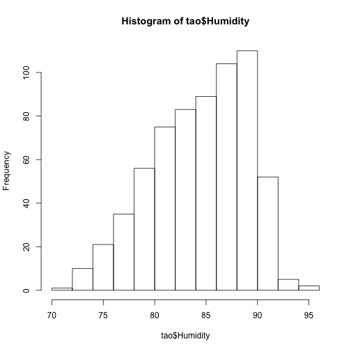

Missing Data Imputation
Iteractive Robust Model-based Imputation
Using library 'VIM' to create a new data.frame with Iteractive Robust Model-based Imputation (IRMI) values in place of missing values. Notice in the output (from the functions below) that R recognizes missing values as 'NA'. First we summarise the data and find out how many 'NA' are present in data:
library(foreign)
invisible(library(Rcmdr))
## Error in library(Rcmdr): there is no package called 'Rcmdr'
library(VIM)
## Loading required package: colorspace
## Loading required package: grid
## VIM is ready to use.
## Since version 4.0.0 the GUI is in its own package VIMGUI.
##
## Please use the package to use the new (and old) GUI.
##
## Suggestions and bug-reports can be submitted at: https://github.com/alexkowa/VIM/issues
##
## Attaching package: 'VIM'
##
## The following object is masked from 'package:datasets':
##
## sleep
data(tao)
nrow(tao)
## [1] 736
names(tao)
## [1] "Year" "Latitude" "Longitude"
## [4] "Sea.Surface.Temp" "Air.Temp" "Humidity"
## [7] "UWind" "VWind"
countNA(tao)
## [1] 177
hist(tao$Humidity)
 Then we create a new data frame with the imputed values in place of the missing ones.
imputed.tao <- irmi(tao)
## Time difference of 0.2637441 secs
countNA(imputed.tao)
## [1] 0
hist(imputed.tao$Humidity)